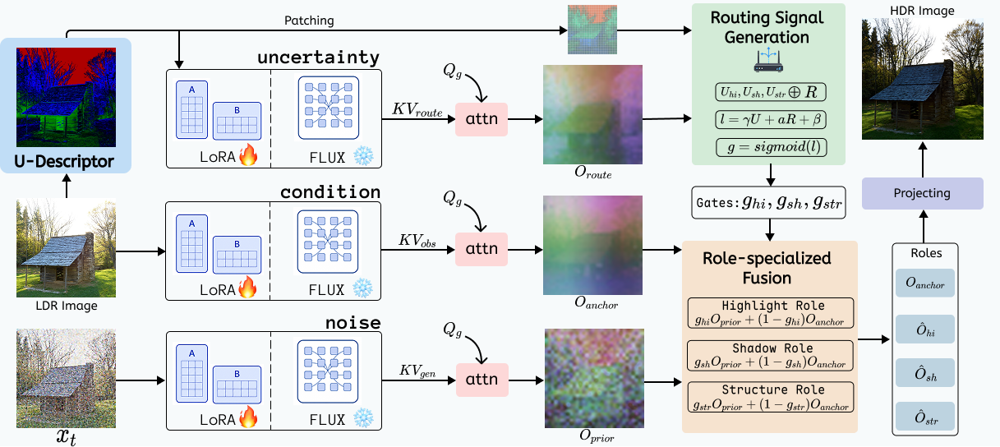
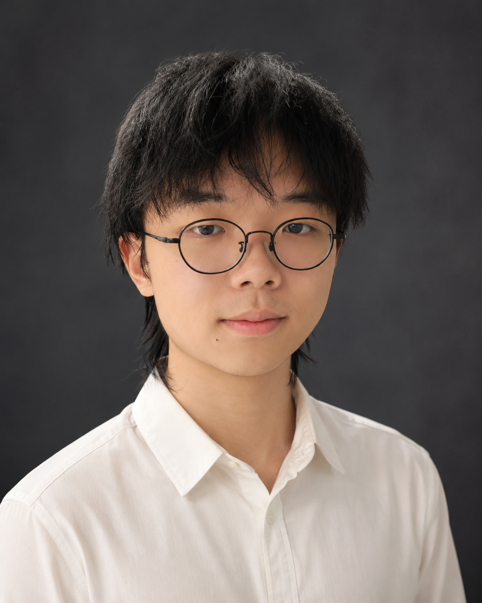

Unleashing Pretrained Generative Priors for Single-Image HDR Reconstruction via Uncertainty-Routed Attention
Research on pretrained generative priors for single-image HDR reconstruction with uncertainty-routed attention.

B.S. in Mathematics and Computer Science, University of Electronic Science and Technology of China
By the time of my sophomore year, my research focused on low-level computer vision. I work under the guidance of Prof. Shuaicheng Liu in the Image Processing Lab at UESTC. During this period, I am fortunate to work closely with Dr. Zhen Liu.
I also have practical experience in research computing operations and currently serve as the administrator of two 8-GPU RTX 4090 servers. My research interests are now expanding from low-level computer vision toward embodied intelligence, with a particular focus on manipulation and vision-language-action models.
GPA: 3.8/4.0. CET-4: 602. CET-6: 582.

Research on pretrained generative priors for single-image HDR reconstruction with uncertainty-routed attention.

Research on exposure-aware one-step generative reconstruction for single-image HDR imaging.